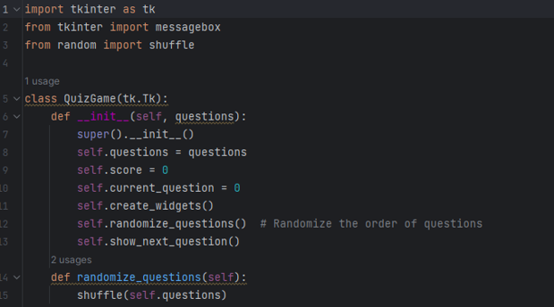
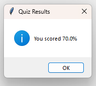

LSA is for students who need an open-source option to study anywhere they can bring a PC. At no cost you can download this module and use it as is to study any topic you want in a Q and A format.
Since it is an individual module you can modify it to your hearts content, paste it into an existing script, take functions from for other projects
Core functionality of the program includes bringing up an interface to take a quiz through, randomizing the library of questions, and grade your performance. Different UI’s can be loaded by the import command, they just need to be specified in that function.
